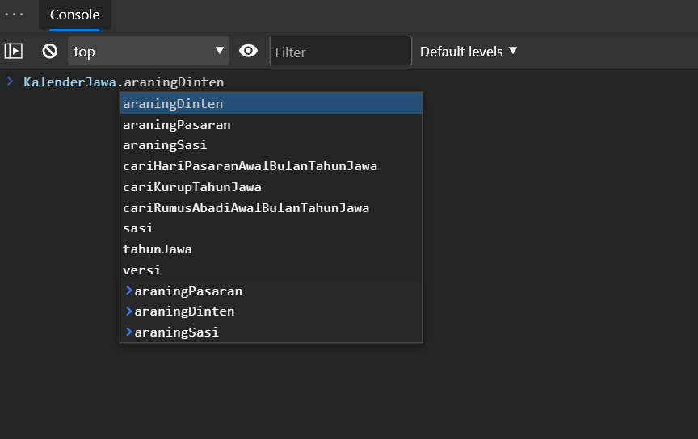

Buka console dan bermain dengan API Pustaka Kalender Jawa
Misalnya tulis kode berikut ke console browser
KalenderJawa.araningPasaran
atau ketik var global KalenderJawa pada console browser dan fitur autocompletion akan memberikan anda petunjuk dari semua properti ataupun metode dari pustaka.
